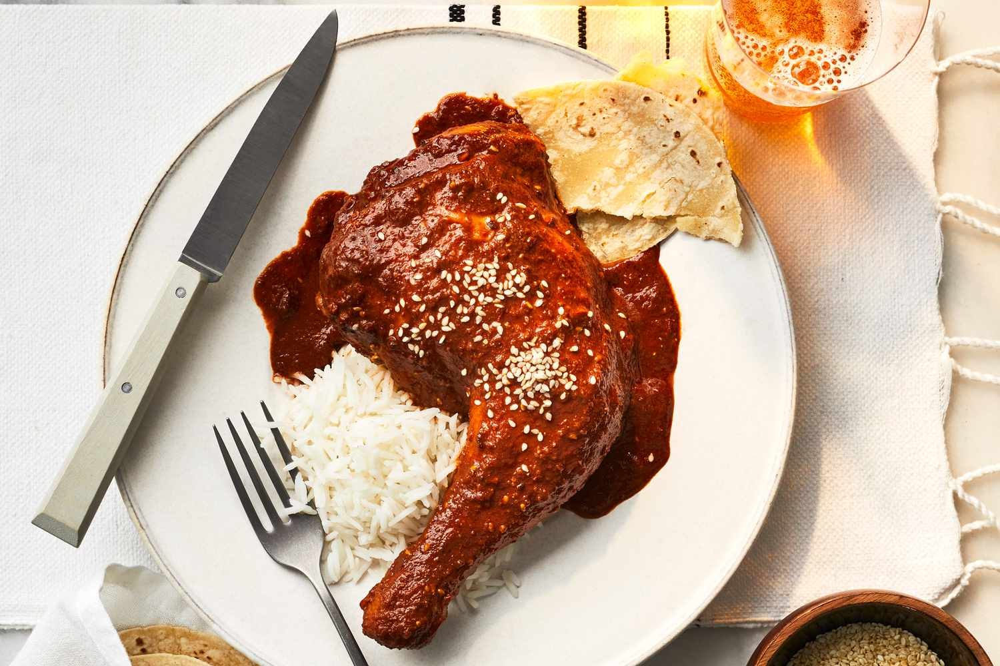

Mexican Mole

Mexican Mole
Ingredients
- 3 Dried Chipotle Chiles
- 2 Dried Guajillo Chiles
- 2 Dried Ancho Chiles
- 2 Cups Chicken Broth
- 1 Dinner Roll
- 2 Corn Tortillas
- 5 Tomatllios
- 2 Tomatoes
- 1 tbs. Lard
- 1/2 Head of Garlic
- 1/2 Cup of Raisins
- 2 Tbs. Cumin Seeds
- 1 Tbs. Dried Thyme
- 6 Allspice Berries
- 5 Cloves
- 3 Cinnamon Sticks
- 5 oz. Dark Chocolate
- 3 Tbs. White Sugar
Directions
Step 1
Toast chipotle, guajillo, and ancho chiles in a dry pan over medium heat, stirring constantly, until warm and aromatic, about 3 minutes. Transfer to a blender.Step 2
Heat 2 cups chicken broth in a saucepan until it begins to simmer, about 5 minutes. Pour broth into the blender.Step 3
Toast dinner roll pieces and tortilla strips in a dry pan over medium heat, stirring constantly, until lightly browned, about 3 minutes. Transfer to the blender with chicken broth and chiles.Step 4
Allow chiles, toasted bread, and tortillas to soak, fully submerged, in the chicken broth until softened, about 10 minutes. Blend the mixture until smooth.Step 5
Cook tomatillos and tomatoes in a dry skillet on medium-high heat until soft and blackened, 3 to 4 minutes per side. Place tomatoes in the blender with the chile puree.Step 6
Melt lard in a large skillet over medium heat. Stir in onion, garlic, peanuts, raisins, cumin seeds, thyme, allspice berries, cloves, and cinnamon sticks; cook and stir until onions are soft and golden, 5 to 8 minutes. Remove the cinnamon sticks and other whole spices; add onion mixture to the blender with the chile-tomato mixture and blend until smooth.Step 7
Pour chile puree into a large saucepan over medium heat. Stir in 1 cup chicken broth, chocolate, sugar, and salt. Bring mixture to a simmer; stir until chocolate is melted and sauce is thickened and slightly reduced, 10 to 15 minutes.